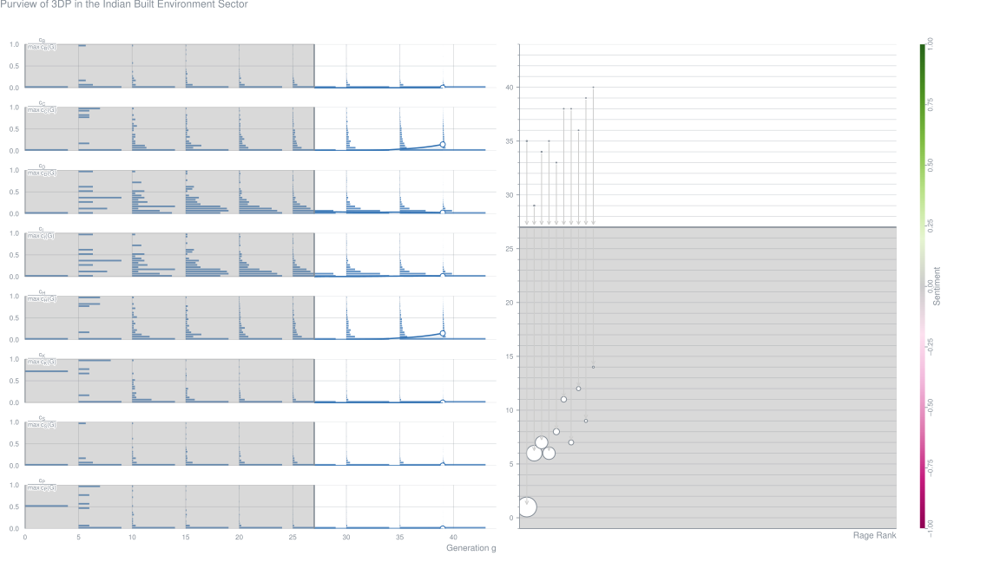
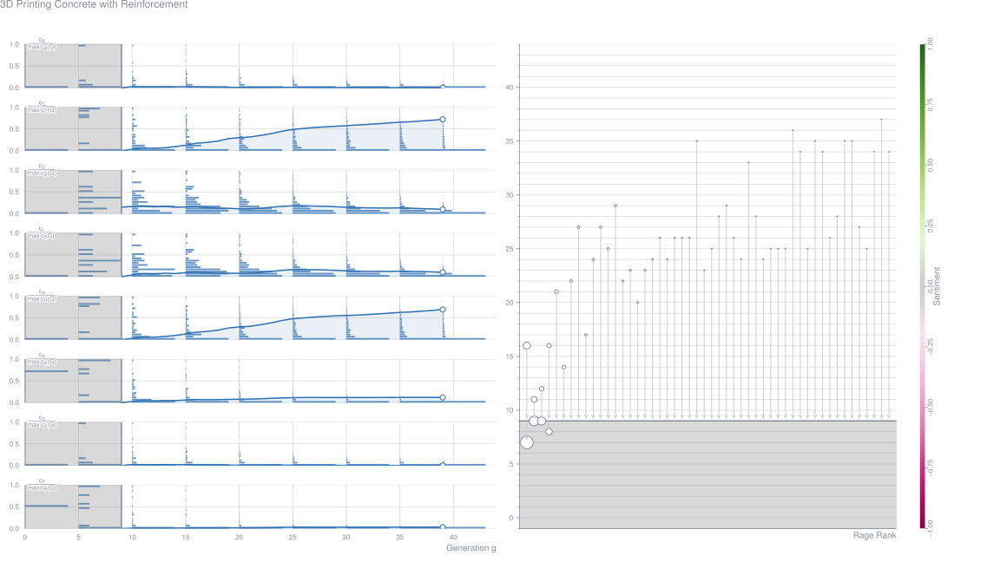
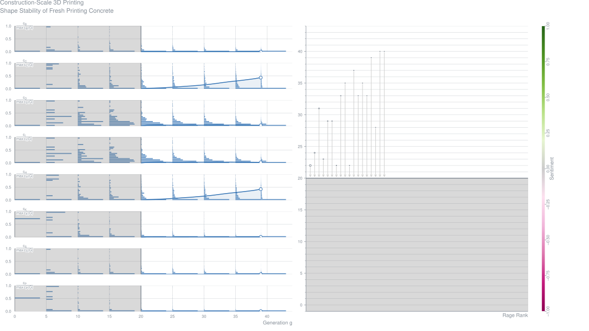
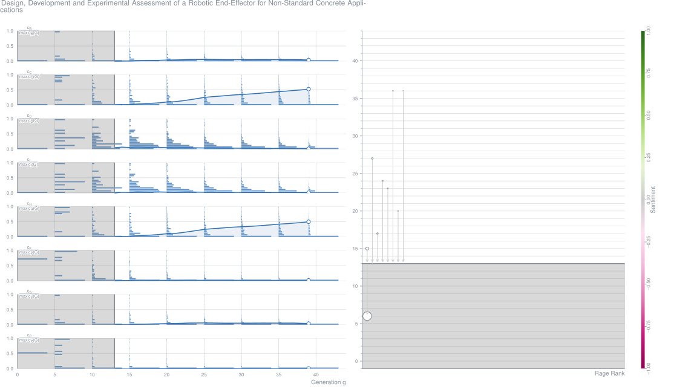
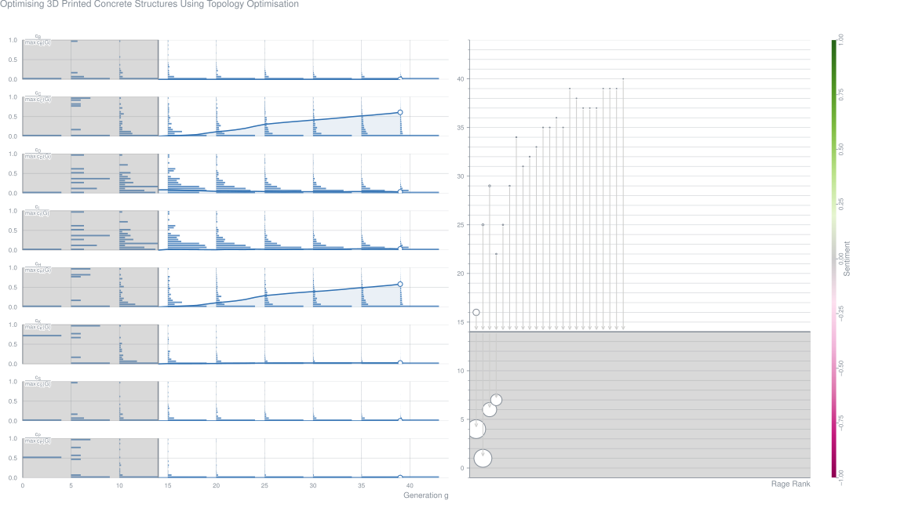
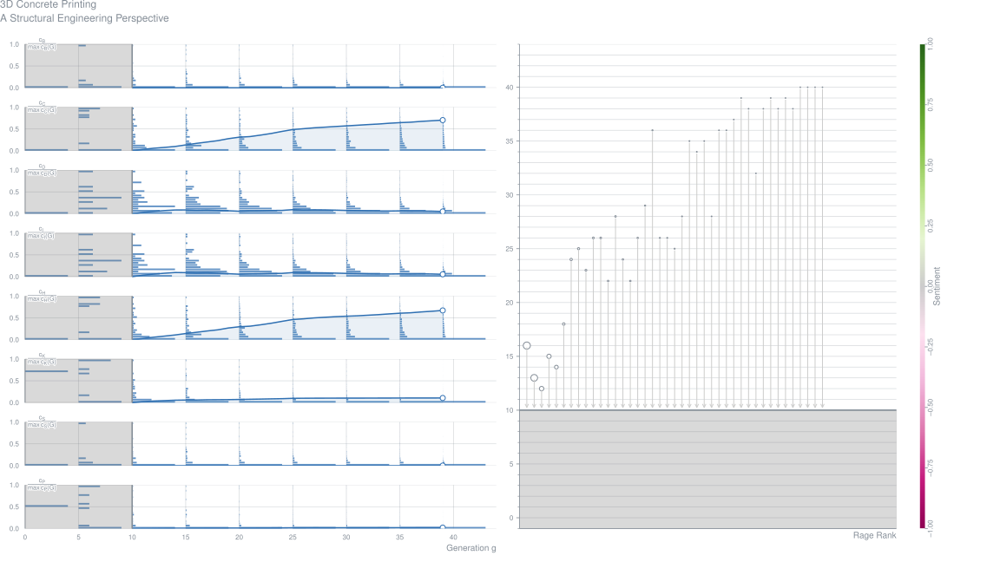
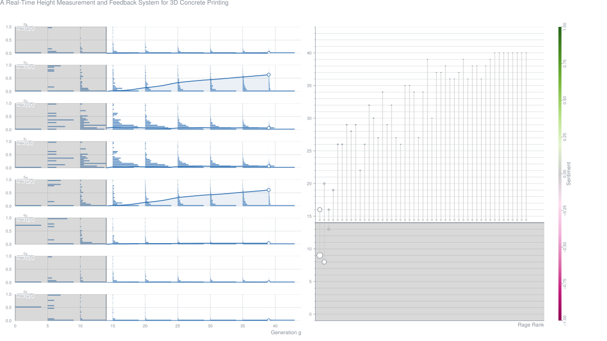

Purview of 3DP in the Indian Built Environment Sector (2017-06)
Taqdees Anjum,
Poorvesh Dongre,
Fozail Misbah,
V. Nanyam Contribution – Proceedings of the Creative Construction Conference 2017
Abstract3D printing or Additive Manufacturing, a means of total automation, is a part of the new industrial revolution. This technology has gained significant attention in all the manufacturing industries throughout the world in the last few decades. Considering the adoption of automation, the construction industry is not lagging behind in adopting 3D printing. Automation in construction by the use of a 3D printer shall increase architectural freedom, balances the labor dependency, decreases the time & cost overruns and shall also help in the adoption of Building Information Modelling. This is still a very novice technology in construction industry, thus, there is a need to understand the challenges & limitations associated with adoption of 3D printing in construction industry. Stakeholders such as client, consultant, contractors, and end users shall play a major role in the adoption of any new technology. Thus, the perspective of various stakeholders of built environment sector needs to be assessed to understand the acceptability of 3D printing as a means of construction technology. This research will highlight the status of adoption of 3D printing in the construction industry and will discuss the benefits and challenges in the adoption of 3D printing in India. Further to the benefits and challenges in adoption, the potential and future of this technology in Indian construction industry will be discussed.Metrics
AbstractRecent years have seen a rapid growth of additive manufacturing methods for concrete construction. A recurring issue associated with these methods, however, is the lack of ductility in the resulting product. In cases this is solved by combining printing with conventional casting and reinforcing techniques. Alternatively, this paper presents first findings on the development of a system to directly entrain a suitable form of reinforcement during printing. A device is introduced to apply the reinforcement. Several options for online reinforcement medium are compared for printability and structural performance, based printing test runs and 4-point bending tests respectively. It is shown that high-performance steel cables can provide suitable reinforcement characteristics, although improved bond would allow better use of the cable capabilities. Significant post-cracking deformations and post-cracking strength can be achieved. Further research into optimal reinforcement placement and configuration is recommended.Metrics
Construction-Scale 3D Printing: Shape Stability of Fresh Printing Concrete (2017-06)
Ali Kazemian,
Xiao Yuan,
Ryan Meier,
Evan Cochran,
Behrokh Khoshnevis Contribution – Proceedings of the ASME 12th International Manufacturing Science and Engineering Conference
AbstractBuilding 3D objects in sequential layers is a technique employed by rapid manufacturing processes and allows great design freedom in manufacturing. Scaling up such automated additive fabrication from building small industrial parts to constructing buildings has been challenging for researchers during the recent years. Compared to the traditional construction methods, numerous advantages are offered by a well-developed layer based automated construction process, including architectural design freedom, lower construction cost, superior construction speed, and higher degree of customization. Concrete has been recognized as most viable option as the material to be used with such a process. However, there are several main challenges that yet have to be solved. Obtaining a mixture with high shape stability in the fresh state is among these challenges. Ideally, non-stop printing of successive layers is desired in building a structure, so the total construction time is minimized. In this paper, an experimental investigation of the shape stability of freshly printed concrete layers using a small-scale linear concrete printing setup with remote control capability is outlined. First, longer stoppage time between successive layers is examined to determine the effects on the deformations of fresh printing concrete. Then, heat application is proposed and studied as a measure to improve the shape stability of freshly printed concrete without adding any delay to the construction process. Furthermore, a one-story building is considered and the influence of each scenario on the total construction time is discussed.Metrics
Design, Development and Experimental Assessment of a Robotic End-Effector for Non-Standard Concrete Applications (2017-06)
AbstractDespite the recent advances in, and the adoption of robotic technologies in the construction industry, the architectural processes which demand a high degree of geometric freedom still remain largely labour intensive and manual. This is due to the inherent difficulties in robotizing the current implementation of such processes coupled with the lack of alternate robotic technologies. A specific example, which is also the focus of this paper, is that of building a steel reinforced concrete structure, with varying curvature or cross-section. This process still remains rather manual and requires extensive support of customized form-work. In this paper, first we describe an alternate novel robotic fabrication process for building steel wire meshes which act as both reinforcement and formwork. The robotization of such a process is discussed with the use of a previously developed mobile robotic system. Based on the specifications derived from the process, design of a novel custom designed robotic end-effector, enabling this process, is detailed. Automation of the full robotic system comprising the mobile robotic system and the robotic end-effector is discussed from simulation to control. Through experimental evaluation of the robotic system, we demonstrate the ability to fully automate the construction of non-standard steel reinforced steel meshes of varying curvature and cell sizes.Metrics
Optimizing 3D Printed Concrete Structures Using Topology Optimization (2017-06)
AbstractAdditive manufacturing and 3D printing are rapidly developing digital fabrication techniques (Lu et al. 2015). After the first steps in small scale printing of metals (Frazier 2014) and plastics (Gibson et al. 2014) have been made, research from various groups around the world is now also focusing on large scale printing in concrete (Lim et al. 2012) and making this technology more suitable for the construction scale. The potential of using this technology is that it will be possible to create complex and/or customised concrete designs with the expectation that the costs will be low and the construction speeds will be high. Additionally, this new technology will provide opportunities to create more efficient structures. Structures can already be optimised in the early stages of the design for weight and structural performance, but the resulting optimised structures are often difficult to manufacture due to the resulting geometry of the design. Additive manufacturing can address this issue without high costs for moulds and labour. This paper will present a novel methodology to include material performance and manufacturing constraints of 3D printed concrete in design optimisation processes. The study examines the possibility to optimise concrete structures in the design phase. In order to save material and thus create more sustainable and more cost efficient structures, a topology optimisation method has been created specifically for 3D printed concrete. Traditional topology optimisation methods consider isotropic and linear elastic material and will not necessarily produce realisable and reliable optimised structures. In the algorithm presented constraints of the printing process and material properties from physical testing of this layered material have been considered in the optimisation. By adopting this methodology more realistic and feasible optimal concrete structures can be designed.Metrics
3D Concrete Printing: A Structural Engineering Perspective (2017-06)
Abstract3D Concrete Printing (3DCP) is being developed in an increasing number of places around the globe. The focus is mainly on a trial-and-error based exploration of the possibilities. However, to obtain a viable manufacturing technology and realize the 3DCP potential, a higher level of process control is required. Four levels of control are therefore identified. Research efforts and key results to achieve a higher level of control than the current one are presented. As a final goal, optimization algorithms should be able to define optimum print sessions, based on allowable print strategies and structural analysis models describing both the fresh and hardened concrete state. This will result in new geometries appropriate to this specific manufacturing technique. These geometries, however, can only be applied when structural safety is achieved, either by loading conditions (compression structures), hybrid solutions (combination with conventional reinforced concrete), embedded reinforcement, FRC and prestress. Such solutions are therefore being explored.Metrics
A Real-Time Height Measurement and Feedback System for 3D Concrete Printing (2017-06)
AbstractRecent years have seen a rapid growth of additive manufacturing methods for concrete construction. Generally, these methods are based on a linear sequence of design ! print path definition ! actual printer actions in a print environment. However, printing experiments show that a large number of parameters influence the printing process. Not all of these can be predicted accurate on forehand. Therefore, a method is introduced that allows real-time adjustment of the print process. As a proof-of-concept, a measurement system for the nozzle height has been developed and tested. Because this variable relates to machine properties, environmental conditions as well as material behaviour, it is a crucial parameter to control. In two case study prints, the effectiveness of the device was shown. In one study, the printer could follow a range of irregular curves in the print bed, whereas only a simple flat rectangular print path had been programmed. In the other, it was shown the print path could be adjusted to vertical deformation of the previous layers of printed filament in a tubular object of several dozen layers. Thus, premature failure through irregular loading of the object during printing was avoided. Further expansion of the use of real-time measurement devices may be anticipated in the future. Besides more advanced geometrical measuring, chemical and physical conditions such as concrete temperature (both before and after deposition), surface wetness, and environment humidity, can be recorded. Combined with the machine action log, this should result in a detailed set of as-built data of the printed object, allowing e.g. for a geometrical clash control with the design as well as other quality controls.Metrics
Design Process of a 3D Printed Concrete Water Taxi Stop (2017-06)
Jan van Wolfswinkel,
Wim van ‘t Land,
Herke Stuit,
Guido Bastiaens,
Lucas ter Hall,
Wessel van Beerendonk,
Theo Voogd,
Mustapha Attahiri Contribution – High Tech Concrete
AbstractCurrent developments in digital design and robotic fabrication offer new opportunities in the field of concrete constructions. A manufacturing technique that is exceptionally promising within this area is Robotic 3D Concrete Printing. 3D Concrete Printing has a wide scope of advantages compared to traditional concrete formwork methods of today. One can think of shorter production cycle times because no formwork is needed anymore. It allows for efficient material usage because it can deposit material at exactly those places where it is functional needed. Beside these disruptive possibilities it will also allow for a new architectural style. Structural performance can be interwoven with design and will be more exposed in the building itself. The opportunities of Robotic 3D Concrete Printing are being explored in a real project for the city of Rotterdam; the design and manufacturing of a 3D Concrete Printed Water Taxi Stop. Through this project, a couple of questions regarding the application of Robotic 3D Concrete Printing are to be addressed:
– In what way can form finding contribute to determining the optimal shape of a printed construction?
– How does design freedom translate to efficient material usage?
– How does 3D concrete printing change the role of structural design within the design process?
– In what way contributes material and load-bearing tests to the acquisition of a building permit?
Inter-Layer Adhesion and Strength of Structures in Contour Crafting: Effects of Aggregate-Size, Extrusion-Rate, and Layer-Thickness (2017-06)
AbstractContour Crafting (CC) is a method that builds coherent concrete structures in a layer-by-layer fabrication fashion. During fabrication, layers must be bonded together to make a homogenous structure, as there is no vibration or external force during layer deposition. This research investigates the structural integrity of Contour Crafted structures using experimental approaches to analyze the bond strength between layers. Initially, a concrete mixture which the compressive and tensile strength is significantly improved through modifying the aggregate size and aggregate to cement ratio is developed. The mixture is compatible with an existing extrusion system and it is tested to quantify the strength at interface for different extrusion rate and layer thickness. The results show that an improvement of up to 16% at interface is achievable for different fabrication conditions.